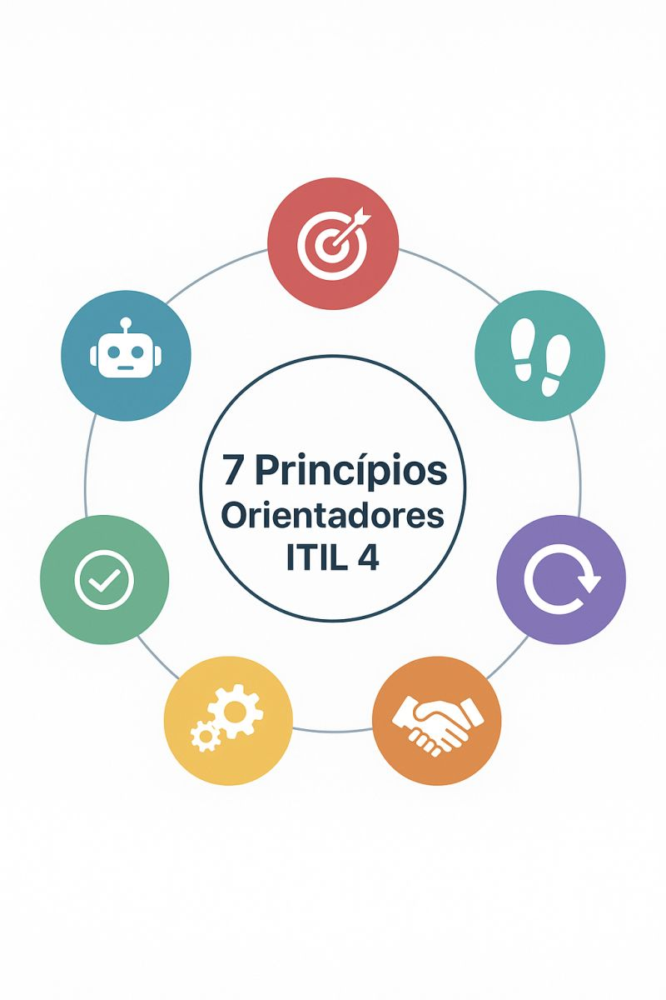

En el campo de la ética, los principios son un conjunto de normas generales y universales que guían las acciones y la conducta. Estos fundamentan y estructuran un sistema de valores que definen un modo de estar y actuar en la vida cotidiana.
Se llaman "principios" porque se encuentran en el origen de toda estructura moral o social. Son preceptos fundamentales considerados beneficiosos no solo para el individuo, sino para la comunidad y la humanidad en general.

ITIL 4 se basa en un conjunto de principios prácticos y universales que guían a las organizaciones en la prestación de servicios de TI eficaces.
Ningún principio actúa de forma aislada. Por ejemplo, al identificar un problema en la prestación de un servicio, primero debemos Centrarnos en el valor para entender qué está afectando al cliente. Inmediatamente, aplicamos Pensar y trabajar de forma integral para asegurarnos de que la solución propuesta no rompa otra parte del sistema. Durante la implementación de la mejora, usamos Progresar de forma iterativa y con feedback para probar la solución en pequeñas fases, asegurándonos de Buscar la sencillez en cada paso. De esta manera, los principios se entrelazan creando una red de seguridad que garantiza que las decisiones sean equilibradas y efectivas.
Saber elegir qué principio aplicar es fundamental ante escenarios complejos. Imaginemos que un equipo de desarrollo decide construir desde cero una nueva herramienta para la gestión de todo un servicio sin consultar a otras áreas. Esta acción aislada muy probablemente infrinja el principio de "Empezar desde donde se está" (ya que podrían estar reinventando la rueda y desperdiciando recursos que la empresa ya tiene).
Para resolver esto, es crucial aplicar la regla de Colaborar y promover la visibilidad. En lugar de trabajar a puerta cerrada, el equipo debe involucrar a los usuarios finales, a operaciones y a soporte técnico desde el día uno. Al promover la visibilidad del proyecto, otras áreas pueden aportar soluciones existentes, compartir el progreso y alinear la nueva herramienta con las necesidades reales del negocio, logrando un éxito conjunto.
Analizar qué principio aplicar en nuestra empresa requiere entender que estos siete conceptos no son reglas estrictas ni leyes inflexibles. Son guías de comportamiento que deben adaptarse a la madurez, el tamaño y la cultura específica de cada organización.
Lo que funciona para una startup tecnológica ágil no será exactamente igual de funcional para un gran banco tradicional. Los profesionales de TI deben utilizar su juicio crítico para ponderar qué principio tiene mayor peso en una situación dada, eligiendo el "camino" correcto para que la toma de decisiones siempre aporte valor sin burocracia innecesaria.